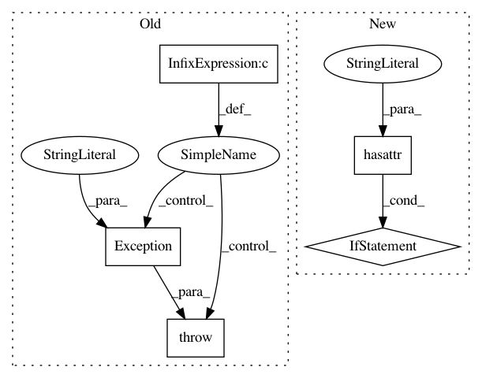

c60e2dfbdbb49b383b159fba7f46810c7dcbbf34,keras/layers/core.py,Layer,set_previous,#Layer#Any#Any#,30
Before Change
def set_previous(self, layer, connection_map={}):
assert self.nb_input == layer.nb_output == 1, "Cannot connect layers: input count and output count should be 1."
if not self.supports_masked_input() and layer.get_output_mask() is not None:
raise Exception("Cannot connect non-masking layer to layer with masked output")
self.previous = layer
self.build()
def build(self):
After Change
def set_previous(self, layer, connection_map={}):
assert self.nb_input == layer.nb_output == 1, "Cannot connect layers: input count and output count should be 1."
if hasattr(self, "input_ndim"):
assert self.input_ndim == len(layer.output_shape), "Incompatible shapes: layer expected input with ndim=" +\
str(self.input_ndim) + " but previous layer has output_shape " + str(layer.output_shape)
if layer.get_output_mask() is not None:
assert self.supports_masked_input(), "Cannot connect non-masking layer to layer with masked output"
self.previous = layer
self.build()
In pattern: SUPERPATTERN
Frequency: 3
Non-data size: 5
Instances
Project Name: keras-team/keras
Commit Name: c60e2dfbdbb49b383b159fba7f46810c7dcbbf34
Time: 2015-10-05
Author: makoto.matsuyama@gmx.com
File Name: keras/layers/core.py
Class Name: Layer
Method Name: set_previous
Project Name: keras-team/keras
Commit Name: 44d558ad7f13251650f40475eef6652df59e4b09
Time: 2016-02-22
Author: Nicholas.Eggert@target.com
File Name: keras/layers/containers.py
Class Name: Graph
Method Name: set_previous
Project Name: pytorch/pytorch
Commit Name: e87ab2ac4d4f4d208a1dcbc21b584fe59bf18e5f
Time: 2021-03-15
Author: erjia@fb.com
File Name: torch/utils/data/decorator.py
Class Name: functional_datapipe
Method Name: __call__